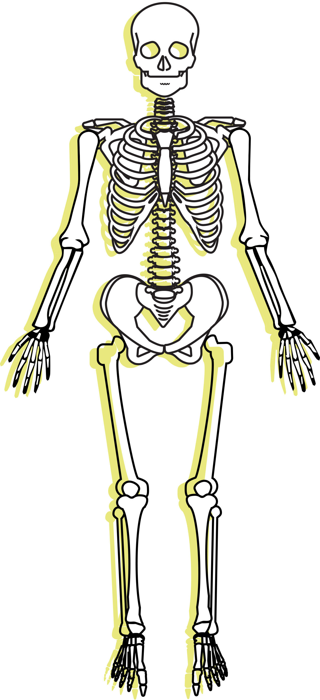

Overview
The skeleton is the framework of the human body. Its functions include: support and protection, mineral storage and blood formation. Each individual bone is linked together in different ways. The majority of our bones produce movement as levers along with the muscular system. The human body consists of a total of 206 bones and can be divided into the axial and appendicular skeleton.
The axial skelton forms the central axis of the human body. It consists of the skull, vertebral column and thoracic cage.
The appendicular skeleton forms the rest of the body. It consists of the shoulder and pelvic girdle, as well as the upper and lower limbs.